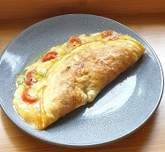

Omelette

Description
An omelet is a dish you might order for breakfast or brunch — it's kind of like a folded pancake made of beaten eggs, sometimes with the addition of vegetables, cheese, or meat
Ingredients
- 3 Eggs
- 40 g Mature cheddar cheese
- 1 Spring onion chopped
- 2 Cherry tomatoes
- 1 pinch S&P
Steps
- Chop your onion, tomatoes,slice or grate your cheese,break your eggs into a bowl and mix with a fork or whisk
- Heat the pan on a medium heat and pour the eggs in
- Lower the heat when you see the eggs change colour at the edge as they firm up (2-3 mns)
- Add the cheese to one side
- Add the sliced tomatoes on top
- Add the spring onion and season with S&P
- Run a flat turner or spatula round the outer edge of the omelette-it should come away cleanly-this let's you know the underside is cooked
- Slide the turner under the omelette that's not got cheese on
- Fold the omelette over the top of the cheese and tomato and cook for a further1-2mns
- Serve on it's own or with a side salad and some crusty bread.
Add cooked meat,peppers, herbs or anything you like to change it up.
Add some butter to the pan before putting the eggs in if you like or if your pan isnt non stick.